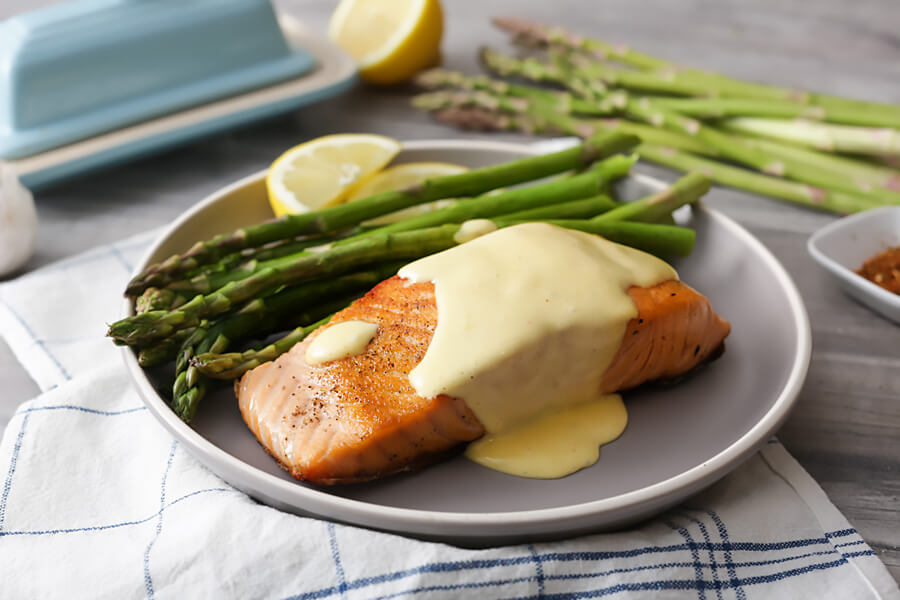

Parchment Trout and New Potatoes with Hollandaise
Return to main
Refreshing, rich, and healthy, this recipe makes a simple weeknight meal and showcases the best that spring has to offer. There's no need to be intimidated by hollandaise sauce in this recipe -- we use a blender or food processor to make this a breeze!
I love serving oily fish like trout and salmon with asparagus in the spring. Asparagus is fickle and can go from tender to mushy quickly. The solution? A microwave sauna.
Pair this entree with a fresh spring Mesclun Salad and our Blueberry-Lemon Pound Cake for a delightful three-course meal you can entertain friends and family with!
Ingredients:
For Trout and New Potatoes:
- 1/2 lb new baby potatoes
- 1/4 cup extra virgin olive oil, divided
- 2 whole shallots, thinly sliced
- 3 cloves garlic, minced
- Dash sea salt and freshly ground black pepper, to taste
- 4 - 4oz trout filets
- 4 sprigs fresh thyme
- 1/4 cup dry white wine or vermouth (non-alcoholic option: use chicken stock, vegetable stock, or clam broth instead)
- A handful mixed spring herbs, minced - tarragon,
chives, dill, or parsley work wonderfully
- 1 whole lemon, zested and quartered
For Hollandaise:
- 10 Tbsp unsalted butter (if using salted butter, skip the added salt)
- 3 large egg yolks, straight from the fridge
- 1 Tbsp lemon juice
- 1/2 tsp kosher salt, divided
- 1/8 tsp cayenne, optional
For Steamed Asparagus:
- 1 bunch asparagus
- 2 Tbsp butter
- Salt and freshly ground pepper, to taste
Gear Needed:
- Parchment paper
- Baking sheet
- Blender or food processor
- Microwave
- Paper towels
Instructions:
Parchment Salmon and New Potatoes:
- Preheat your oven to 400 degrees Fahrenheit.
- Cut 4 (14 inch) squares of parchment paper. Fold each in half. Then, unfold and lay each flat. Top half of each parchment square with one fish filet. Sprinkle with salt, pepper, and a pinch of the lemon zest. Divide the potatoes evenly among each parchment square and arrange around and on top of the fish. Drizzle with 1 Tbsp each of olive oil, the juice of 1/4 lemon, and wine. Sprinkle a large pinch of chopped herbs.
- Fold empty half of parchment over filling. Beginning at one short end, fold edges up and tightly over themselves, working your way around the rectangle. Transfer packets to a sheet pan. Bake 15-20 minutes or until puffed and golden brown. The potatoes should be fork tender, and the trout should no longer be translucent and flake easily with a fork.
While the fish is in the oven, prepare the hollandaise sauce and asparagus.
Blender Hollandaise:
- Melt the butter slowly in a small pot. Try not to let it boil -- you want the moisture in the butter to remain there and not steam away.
- Add the egg yolks, lemon juice, 1/4 tsp of the salt, and cayenne (if using) into your blender or food processor. Blend the egg yolk mixture for 30 seconds at a medium high speed, until it lightens in color. Use a timer or count out loud, blending for the entire 30 seconds. This step gives the sauce more body.
The friction generated by the blender blades will heat the yolks a bit. The blending action will also introduce a little air into them, making your hollandaise a bit lighter.
- Transfer the melted butter to a glass measuring cup with a spout so it's easy to pour in a thin stream. Remove the plug from the blender lid. Turn the blender speed to low (if you only have one speed, or are using a food processor, this will still work). With the machine running, slowly drizzle in the melted butter.
Continue to blend for another couple seconds after the butter is all incorporated.
- Turn the blender off and taste the sauce. It should be buttery, lemony, and just lightly salty. If it isn't salty or lemony enough, you can add a little more lemon juice or the remaining salt to taste.
If you want a thinner consistency, add a little warm water. Pulse briefly to incorporate the ingredients one more time.
- Store until neeeded in a warm spot, such as next to the stovetop. Use within 30 minutes or less.
Steamed Asparagus:
- Wash asparagus, then taking two or three stalks at a time, bend the base of the stalk until it snaps off. This should be easily done, and will ensure each bite is tender. Discard bottom bits that were snapped off.
- Take several squares of paper towels and lay on a dinner plate. Place asparagus on the paper towels diagonally. Dollop with butter. Tuck the corners over the ends of the asparagus and roll up, like a burrito.
- Douse with water. Conversely, you can dampen the paper towels beforehand, but the order here does not matter much.
- Microwave on HIGH for 5-6 minutes (less if your microwave is higher wattage; more if it is lower).
- Unwrap; discard paper towel. Arrange asparagus on a serving platter or portion on individual plates. Season with salt and pepper to taste, and serve with the fish, potatoes, and Hollandaise.
Return to main